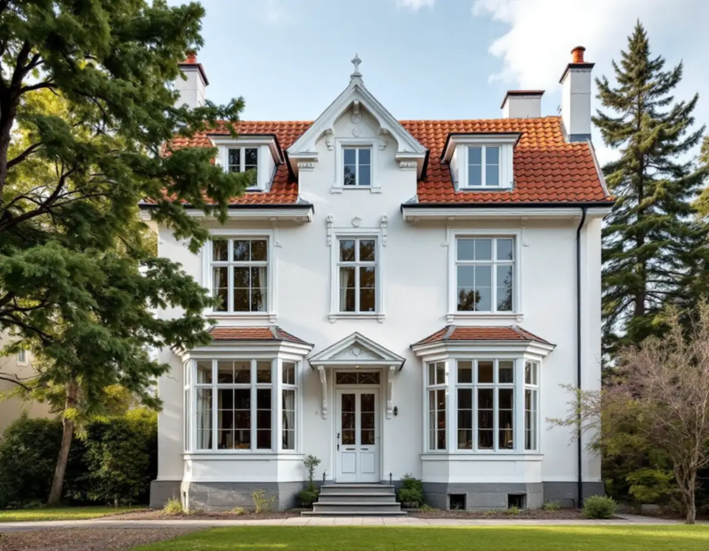
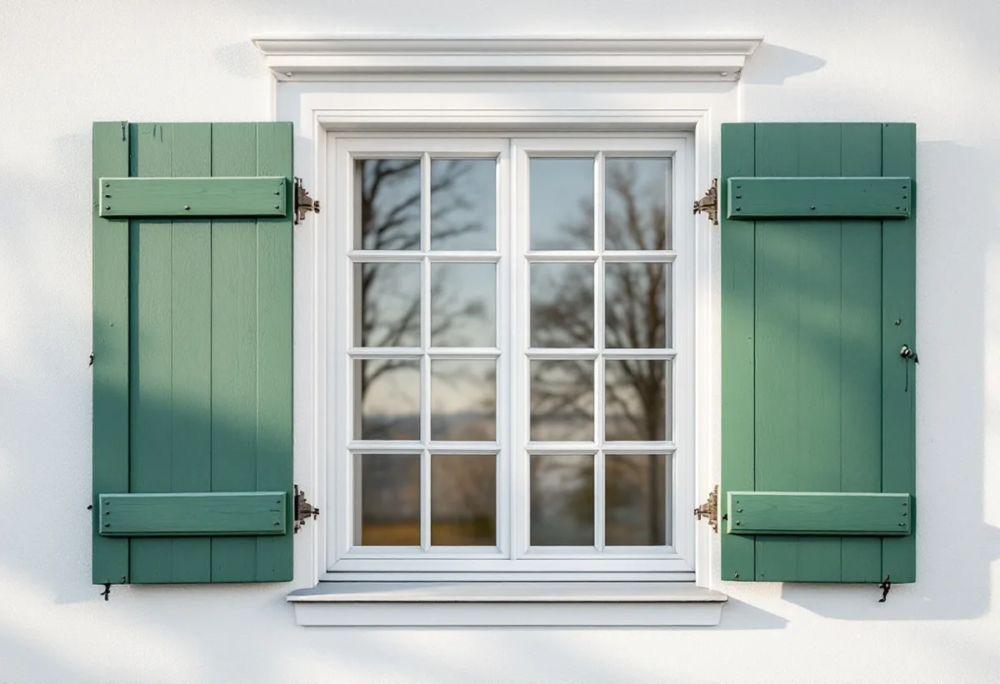

Platsbesök
Vi bedömer varje fönster, mäter upp det och noterar indelning, spröjs och profiler.

På Lidingö villastad och Brevik går det att läsa husens ålder i fönstren: höga helglasade bågar på jugendvillorna, tätt sittande spröjs på nationalromantiken och tvåluftsfönster i fasadliv på 1930- och 40-talens villor.
Beskriv jobbet kort.
Något blev fel. Kontrollera uppgifterna eller ring 08 12 410 276.
Vi tittar på jobbet på plats innan du får offert.
Du ser vad som ingår och vad det kostar.
Vi drar av ROT direkt och sköter ansökan.
Geal Entreprenad AB, Bromma. Org.nr 559303-7566.

Geal Entreprenad AB byter och renoverar fönster på hela Lidingö, kontrollerar stadens lovplikt innan något beställs och lämnar ett skriftligt kostnadsförslag efter ett gratis platsbesök.
Kulturmiljöprogrammets beskrivning av Lidingö villastad följer stilarna decennium för decennium. De äldre villorna är främst byggda i jugend, med höga tak i rött lertegel, tunga socklar i natursten och höga fönster med helglasade bågar och burspråk. Från omkring 1910 skiftade stilen mot nationalromantik, med fönster med tätt sittande spröjs, fönsterluckor, loggior och burspråk.
Under 1920-talet byggdes villorna i klassicerande form. Fönstren blev större än tidigare, med tvåluftsfönster som hade tre rutor per båge i bottenplanet och två rutor per båge i övre planet. Villorna från 1930- och 1940-talen har en försiktig modernism, slätputsade fasader och främst tvåluftsfönster placerade i fasadlivet.
Skillnaden mellan våningarna på 1920-talsvillorna är värd att lägga märke till. Byts fönstren mot ett och samma format på båda planen försvinner en detalj som arkitekten avsiktligt ritade in.
I Breviks villastad beskriver programmet två parvillor från 1912 i kvarteret Trädgården med ljusa slätputsade fasader och tätspröjsade fönster, och en villa i kvarteret Rapsen med drag av italiensk klassicism och jugend, symmetrisk fasad och tätspröjsade fönster. De äldre villorna står i ett och ett halvt till två våningar under branta sadeltak med tegel, skiffer eller plåt.
Villorna från 1940- och 1950-talen är ofta byggda i ett och ett halvt plan i souterräng, med ljusa putsfasader, tidstypiskt smide och en- och tvåluftsfönster. På ett souterränghus sitter fönstren i nedre planet nära marken, och där behöver anslutningen mot sockeln och fönsterblecket särskild omsorg.
För både villastaden och Brevik ger programmet rådet att äldre byggnadsdetaljer ska värnas, till exempel fönster och dörrar i originalutförande, och att byggnaderna ska underhållas med väl anpassade material och metoder.
Lidingö stad skriver att bygglov för fasadändringar på en- och tvåbostadshus har slopats utanför de värdefulla områdena, men att utökad lovplikt gäller för de flesta byggnadsåtgärder inom särskilt kulturhistoriskt värdefulla områden. I stadens webbkarta visas de områdena som ett blått lager. Är fastigheten gulmarkerad kan det finnas värden som behöver bedömas, och då hänvisar staden till sitt kundcenter.
Kulturmiljöprogrammets första del, en handbok för fastighetsägare, förklarar hur en detaljplan kan styra fönstren. En utformningsbestämmelse kan ange hur fönstren ska utformas för att passa befintlig bebyggelse, och en skyddsbestämmelse kan skydda det faktiska materialet och reglera hur underhållet ska utföras och med vilken teknik.
Handboken beskriver också varsamhetskravet, som gäller även utan lov, som ett förhållningssätt där varje ändring utgår från byggnadens karaktärsdrag – till exempel fönstrens utformning. Råden i områdesbeskrivningarna är inte juridiskt bindande, men staden använder dem som stöd i bygglovsärenden.
Eftersom programmet vill att fönster i originalutförande värnas börjar vi med att bedöma om de befintliga fönstren kan renoveras. Boverket skriver att det ofta är mer lönsamt att förbättra fönster i gott skick än att byta, och att det kräver mindre naturresurser. Tätningslister, drevning, kittning och målning, och ett energiglas i innerbågen, kan göra stor skillnad.
Är fönstren i så dåligt skick att de behöver bytas bör de nya anpassas till husets ålder och karaktär, med samma indelning och liknande profiler. Boverket påminner om att grövre fönstersnickerier släpper in mindre dagsljus och att nya fönster ofta blir tyngre, så att gångjärn och beslag behöver kontrolleras.
Fönstersnickerierna behöver målas oftare än resten av fasaden, se målare på Lidingö. Ska fasaden eller taket runt fönstren också ses över finns mer under fasadrenovering på Lidingö.
Vi bedömer varje fönster, mäter upp det och noterar indelning, spröjs och profiler.
Stadens blå och gula markeringar och detaljplanens bestämmelser kontrolleras.
Fönster för fönster avgör vi vad som kan renoveras och vad som behöver bytas.
Renovering, nya fönster, glas och montage står var för sig i förslaget.
Bågar renoveras eller nya fönster monteras med drevning, tätning och bleck.
Vi går igenom resultatet tillsammans och visar hur fönstren sköts.
För ett småhus räknar Skatteverket det som rotarbete att reparera eller byta ut fönster, montera isolerglas, byta fönsterbleck och måla fönster. Avdraget är 30 procent av arbetskostnaden, högst 50 000 kr per person och år och högst 75 000 kr tillsammans med rutavdrag. Solfilm och myggnät ger inget avdrag.
Material och resor räknas inte. Geal drar avdraget direkt på fakturan.
Hur många fönster som kan renoveras och hur många som måste bytas, om spröjs och profiler ska tillverkas efter förlaga, vilket glas som väljs, om fönster i souterrängplanet kräver nya bleck och anslutningar och om arbetet kräver ställning. Efter ett gratis platsbesök får du ett skriftligt kostnadsförslag.
Byta eller renovera fönster.
Fönsterbyte i Stockholm →Takbyte, takbesiktning och plåtarbeten.
Takläggare på Lidingö →Brevik, Mölna och Käppala.
Takrenovering på Lidingö →Potten, avloppet och kulturmiljöerna.
Attefallshus på Lidingö →Värdefulla hus, kulör och bidrag.
Fasadmålning på Lidingö →Villastad, källarbadrum och gästhus.
Badrumsrenovering på Lidingö →Villastäder, radhusbyar och berg.
Byggföretag på Lidingö →Radhus, villor och putsfasader på Lidingö.
Fasadrenovering på Lidingö →Fönster i utpekade kulturmiljöer.
Fönsterrenovering på Lidingö →Souterrängvillor, radhus och äldre villor på Lidingö.
Golvläggare på Lidingö →Slipa och behandla trägolv i kök och hall.
Golvslipning på Lidingö →Villastäder, souterräng och radhusbyar.
Köksrenovering på Lidingö →Villastäder, radhusbyar och stugor på Lidingö.
Målare på Lidingö →Plåt i vind och värdefulla miljöer.
Plåtslagare på Lidingö →Verandor, trappor och dörrar.
Snickare på Lidingö →Nytt material, k-märkning och byggnadsminnen.
Takbyte på Lidingö →Ny tapet med hänsyn till huset.
Tapetsering på Lidingö →Webbkartan, programmet och frivilligt lov.
Tillbyggnad på Lidingö →Behåll stommen, bygg om resten.
Totalrenovering på Lidingö →Eller ring 08 12 410 276, mån–fre 08–17.
Beskriv jobbet kort.
Något blev fel. Kontrollera uppgifterna eller ring 08 12 410 276.